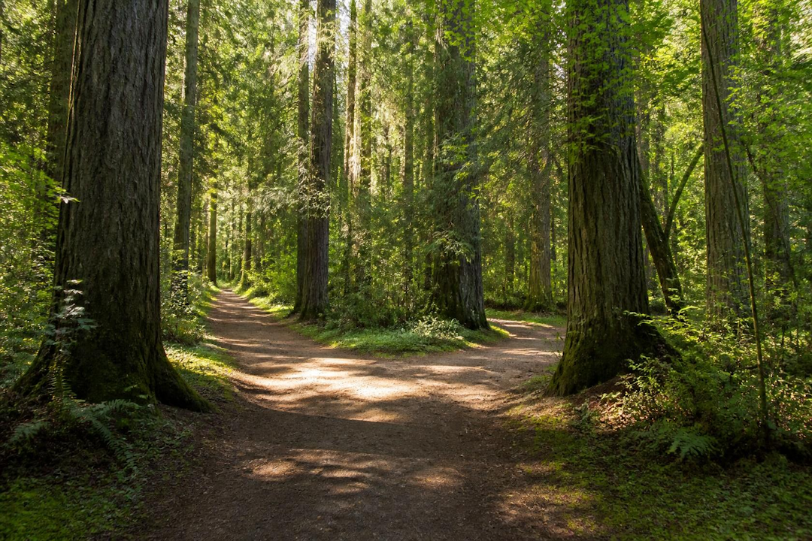

Life often presents us with moments like this path ahead, where a single road suddenly divides into two. Standing at the crossroads, there is no sign pointing toward certainty and no way of knowing exactly where either direction will lead. One path may feel familiar and safe, while the other calls for courage and curiosity. Every choice carries the possibility of growth, challenge, and discovery, reminding us that our journey is shaped not only by where we go, but by the decisions we make along the way.
As we pause and consider the road before us, we are faced with a simple yet profound question. The answer may reveal our hopes, our instincts, or even our willingness to embrace the unknown.
When the path splits and the future remains unwritten, there is only one thing left to decide:
Go Back to Start←